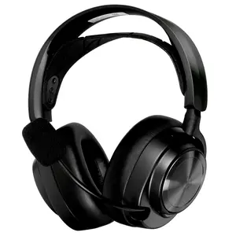
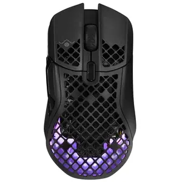

Наушники беспроводные SteelSeries Arctis Nova Pro
|  | Тип: Охватывающие, закрытого типа Частотная характеристика: 10 Гц – 40 кГц Тип подключения: Беспроводные Время работы: до 44 часов Радиус беспроводной связи: 12 м |
Bluetooth-гарнитура SteelSeries Arctis Nova Pro совместима с ПК, игровыми консолями Nintendo Switch, PS4 и PS5, а также мобильными устройствами. Технология 7.1 Virtual и закрытое акустическое исполнение с 40-мм динамиками обеспечивают детализированный звук с пространственным эффектом. Четыре цифровых микрофона четко передают голос. Система активного шумоподавления помогает сосредоточиться на игре и устраняет отвлекающие фоновые звуки.
Мышь беспроводная SteelSeries Aerox 5
|  | Датчик: SteelSeries TrueMove Разрешение: До 18 000 точек на дюйм Вес мыши: 76 г Кнопки: 9 Тип соединения: Беспроводная Время работы: до 180 часов Частота опроса: 1000 Гц Гарантия: 1 год |
Мышь беспроводная SteelSeries Aerox 5 Black работает от мощного аккумулятора, энергия которого нуждается в восполнении спустя 180 ч. При синхронизации используется Bluetooth-интерфейс. Ведущим элементом выступает сенсор SteelSeries TrueMove, который обуславливает точное наведение курсора и маневренное управление аксессуаром. Мышь беспроводная SteelSeries Aerox 5 Black обладает кнопками с возможностью последующего программирования под игровые действия или команды. Расположенные на корпусе отверстия обеспечивают вентиляцию воздуха и препятствуют проскальзыванию ладоней. Форма разработана с учетом анатомических особенностей правой руки. Модель выполнена из матового пластика, поверхность которого устойчива к накапливанию загрязнений.